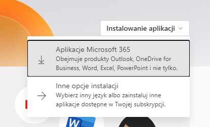

Jak zainstalować MS Office za darmo
- Napisz do Kuby na Messengerze.
- Gdy otrzymasz od Kuby login i hasło w przeglądarce wejdź na stronę office.com.
- Kliknij przycisk
 znajdujący się w prawym górnym rogu strony.
znajdujący się w prawym górnym rogu strony.
- Jeżeli nie logowałeś się na konto Microsoft powinno Ci wyświetlić okienko pokazane poniżej w polu "Adres e-mail, telefon lub Skype" wpisz login wysłany przez Kubę, kliknij Dalej i wpisz hasło podane przez Kubę

- Pierwsze logowanie wymaga zmiany hasła, podaj bieżące i 2 razy nowe, następnie kliknij Zaloguj

- Po zmianie hasła zostaniesz przeniesiony na stronę office.com, kliknij przycisk Instalowanie aplikacji i wybierz opcje Aplikacje Microsoft 365

- W folderze do którego pobierają Ci się pliki, powinien się pojawić plik o nazwie OfficeSetup.exe, kliknij na niego dwukrotnie, uruchomi się instalator pakietu Office.

- Po zakończeniu instalacji uruchom dowolną aplikację (Word, PowerPoint, Excel itp.), po uruchomieniu aplikacji kliknij Zaloguj się i zaloguj się na przed chwilą stworzone konto.

- Możesz się cieszyć aktywowanym pakietem Office
Jeżeli coś ci nie działa, lub wyświetliło Ci się coś czego nie było w poradniku to pisz na Messengerze